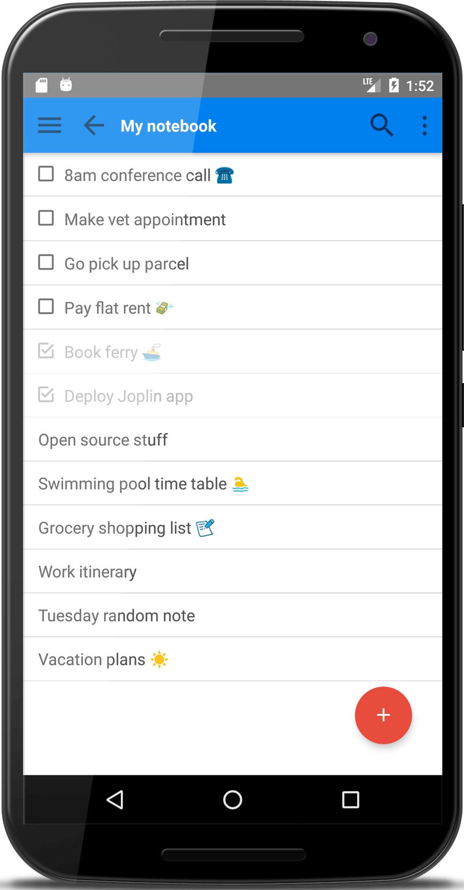

oplin
oplin| Mobile | Command line |
|---|---|
|  |
joplin:/My notebook$ ls -n 12
[ ] 8am conference call ☎
[ ] Make vet appointment
[ ] Go pick up parcel
[ ] Pay flat rent 💸
[X] Book ferry 🚢
[X] Deploy Joplin app
Open source stuff
Swimming pool time table 🏊
Grocery shopping list 📝
Work itinerary
Tuesday random note
Vacation plans ☀️
|
Joplin is a free, open source note taking and todo application, which can handle a large number of notes organised into notebooks. The notes are searchable, can be copied, tagged and modified with your own text editor. The Android application supports markdown rendering.
The notes can be synchronised with various targets including the file system (for example with a network directory) or with Microsoft OneDrive. When synchronising the notes, notebooks, tags and other metadata are saved to plain text files which can be easily inspected, backed up and moved around.
Notes exported from Evenotes via .enex files can be imported into Joplin, including the formatted content (which is converted to markdown), resources (images, attachments, etc.) and complete metadata (geolocation, updated time, created time, etc.).
The current release has been heavily tested so it should be stable enough for every day use. Some features however are missing such as the ability to attach resources to notes and (in the mobile app) to tag notes. For the full list of current and planned features see the Features and Roadmap sections below.
Install
An Android app and a command line interface are currently available. Both can synchronise with each others.
Android

Command line
npm install joplin
Features
- Mobile and command line applications.
- Support notes, todos, tags and notebooks.
- Offline first, so the entire data is always available on the device.
- Ability to synchronise with multiple targets, including the file system and OneDrive (Dropbox is planned).
- Synchronises to a plain text format, which can be easily manipulated, backed up, or exported to a different format.
- Plain text notes, which are rendered as markdown in the mobile application.
- Tag support (currently, tags can be imported from Evernote and modified in the CLI application, but not yet in the mobile one)
- File attachment support (likewise, all file attachements can be imported from Evernote but currently cannot be manually added to a note)
- Search functionality.
- Geolocation support.
- Supports multiple languages.
- Mobile: Support for dark theme / light theme.
Localisation
The applications are currently available in English and French. If you would like to contribute a translation it is quite straightforward, please follow these steps:
- Download Poedit, the translation editor, and install it: https://poedit.net/
- Download the file to be translated: https://raw.githubusercontent.com/laurent22/joplin/master/CliClient/locales/joplin.pot
- In Poedit, open this .pot file, go into the Catalog menu and click Configuration. Change "Country" and "Language" to your own country and language.
- From then you can translate the file. Once it's done, please send the file to this address.
{kind=link}
Roadmap
- All clients: End to end encryption.
- All clients: Support for Dropbox synchronisation.
- Mobile: Compile Windows app?
- Mobile: Link for non-image resources.
- Mobile: Handle tags.
- Mobile: Markdown edition support
- CLI: Option to open conflicts with diff program.
- CLI: Link to open resources (images, attached files, etc).
- CLI: Improve autocompletion.
Command line usage
Joplin can work either as an interactive CLI application or, if a command is provided to the executable, as a one-off command.
For example, this would start the CLI application, from where commands can be ran interactively.
joplin
While this would create a new note and exit:
joplin mknote "my new note"
Full commands:
cat <title>
Displays the given note.
-v, --verbose Displays the complete information about note.
config [name] [value]
Gets or sets a config value. If [value] is not provided, it will show
the value of [name]. If neither [name] nor [value] is provided, it
will list the current configuration.
-v, --verbose Also displays hidden config variables.
cp <pattern> [notebook]
Duplicates the notes matching <pattern> to [notebook]. If no notebook
is specified the note is duplicated in the current notebook.
edit <title>
Edit note.
geoloc <title>
Displays a geolocation URL for the note.
import-enex <file> [notebook]
Imports an Evernote notebook file (.enex file).
-f, --force Do not ask for confirmation.
--fuzzy-matching For debugging purposes. Do not use.
ls [pattern]
Displays the notes in [notebook]. Use `ls /` to display the list of
notebooks.
-n, --limit <num> Displays only the first top <num> notes.
-s, --sort <field> Sorts the item by <field> (eg. title,
updated_time, created_time).
-r, --reverse Reverses the sorting order.
-t, --type <type> Displays only the items of the specific
type(s). Can be `n` for notes, `t` for todos,
or `nt` for notes and todos (eg. `-tt` would
display only the todos, while `-ttd` would
display notes and todos.
-f, --format <format> Either "text" or "json"
-l, --long Use long list format. Format is ID, NOTE_COUNT
(for notebook), DATE, TODO_CHECKED (for todos),
TITLE
mkbook <notebook>
Creates a new notebook.
mknote <note>
Creates a new note.
mktodo <note>
Creates a new todo.
mv <pattern> <destination>
Moves the notes matching <pattern> to <destination>. If <pattern> is a
note, it will be moved to the notebook <destination>. If <pattern> is
a notebook, it will be renamed to <destination>.
rm <pattern>
Deletes the items matching <pattern>.
-f, --force Deletes the items without asking for confirmation.
-r, --recursive Deletes a notebook.
search <pattern> [notebook]
Searches for the given <pattern> in all the notes.
set <note> <name> [value]
Sets the property <name> of the given <note> to the given [value].
status
Displays summary about the notes and notebooks.
sync
Synchronises with remote storage.
--target <target> Sync to provided target (defaults to sync.target
config value)
--random-failures For debugging purposes. Do not use.
tag <command> [tag] [note]
<command> can be "add", "remove" or "list" to assign or remove [tag]
from [note], or to list the notes associated with [tag]. The command
`tag list` can be used to list all the tags.
todo <action> <pattern>
<action> can either be "toggle" or "clear". Use "toggle" to toggle the
given todo between completed and uncompleted state (If the target is a
regular note it will be converted to a todo). Use "clear" to convert
the todo back to a regular note.
toggle <pattern>
Toggles the given todo between completed and uncompleted. If the
target is not a single note it will be converted to a todo.
use <notebook>
Switches to [notebook] - all further operations will happen within
this notebook.
version
Displays version information
Copyright (c) 2017 Laurent Cozic